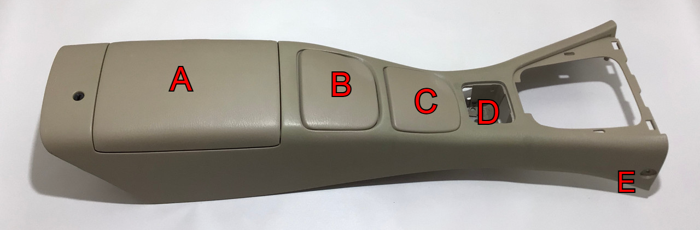
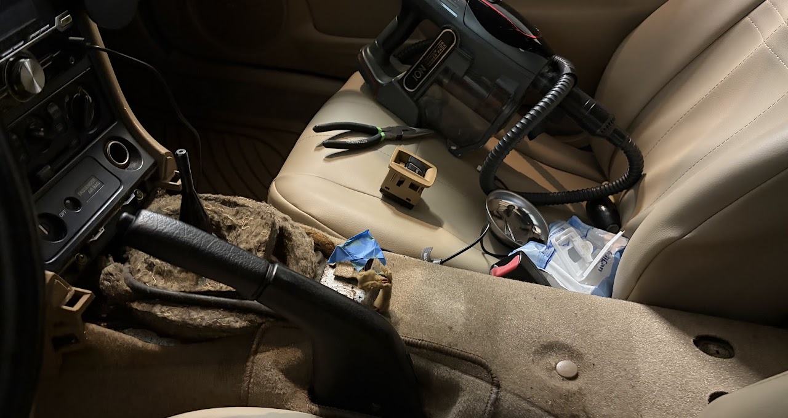
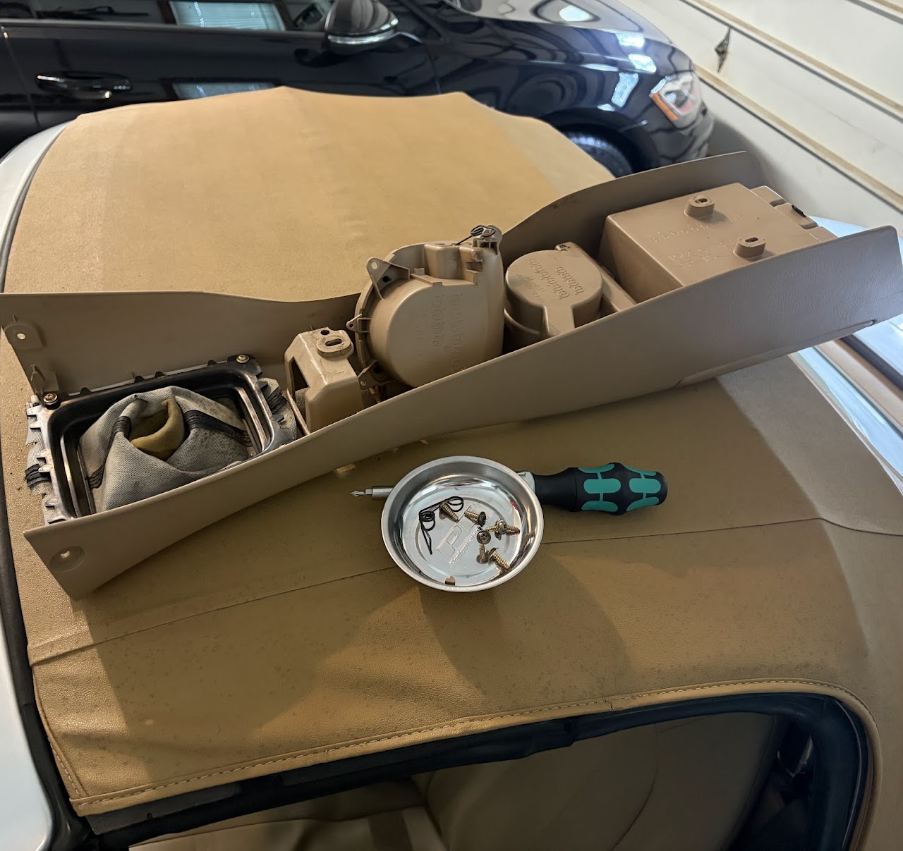
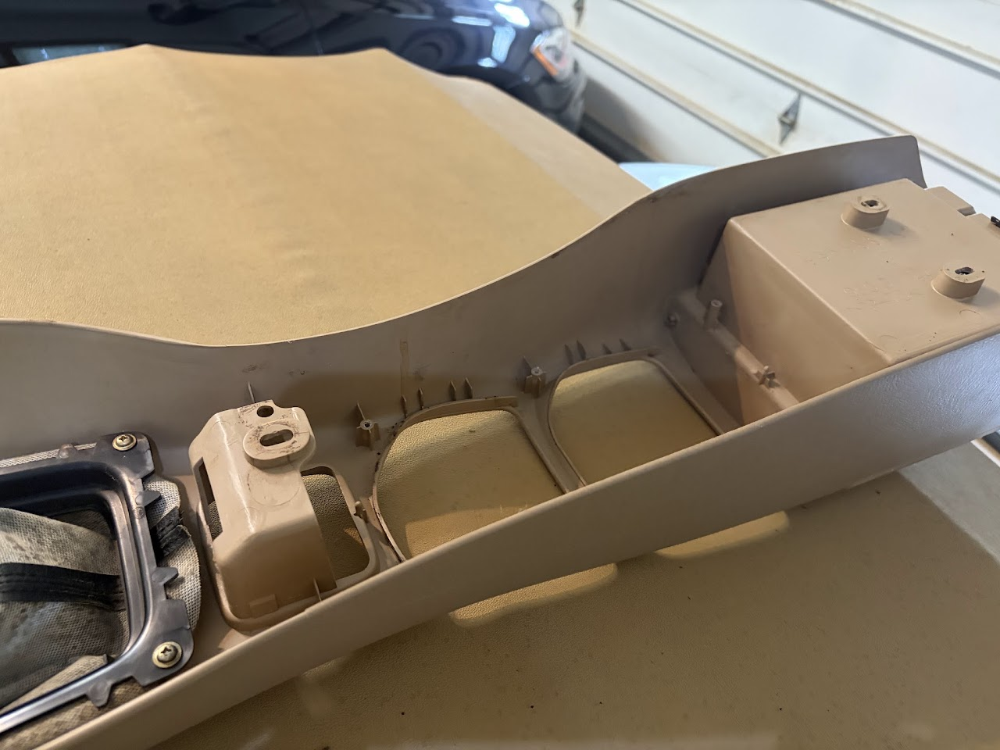
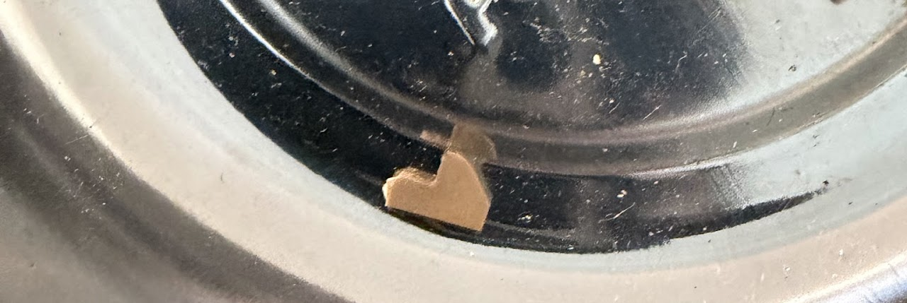
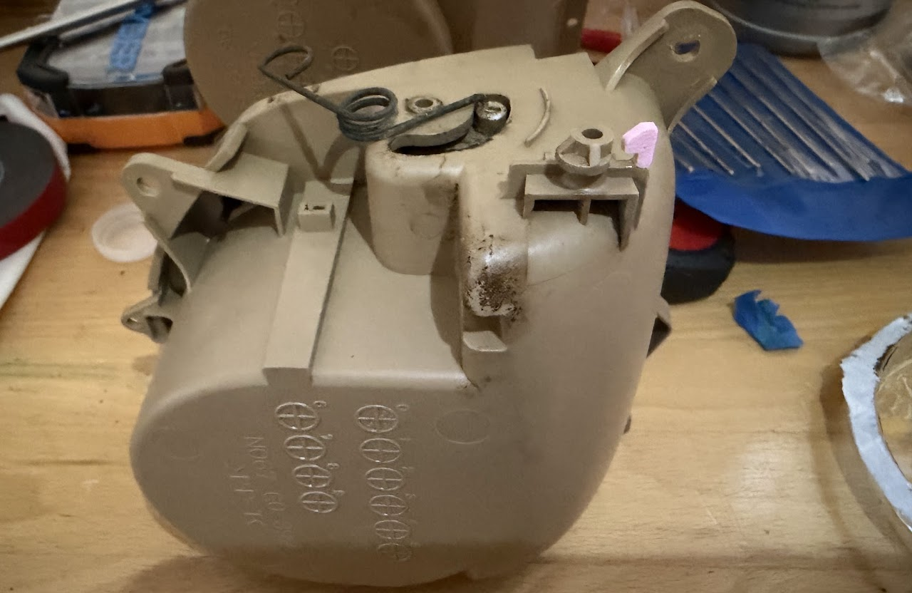
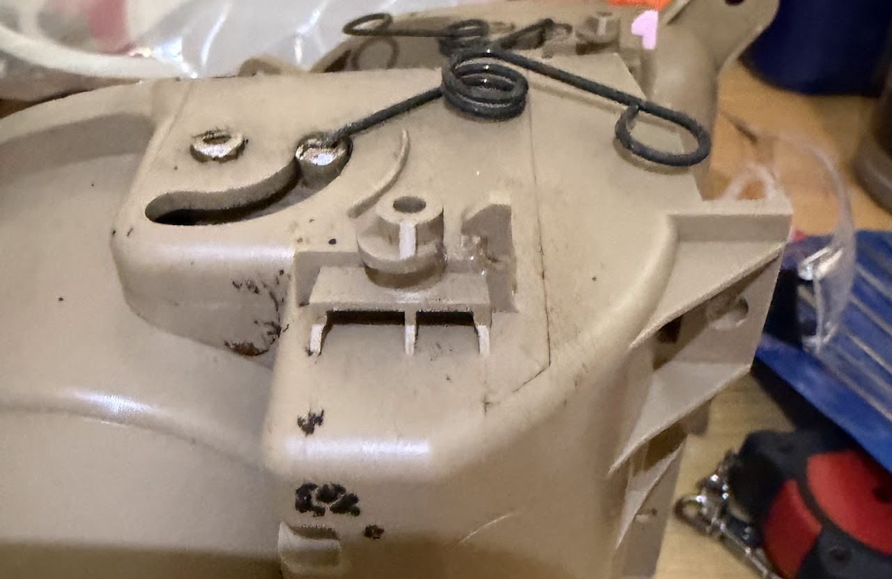
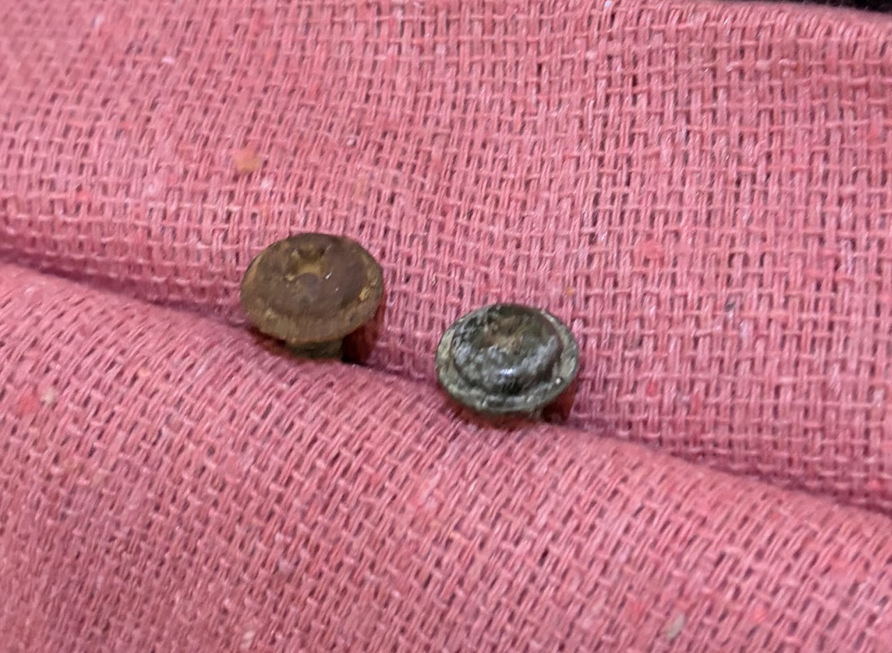
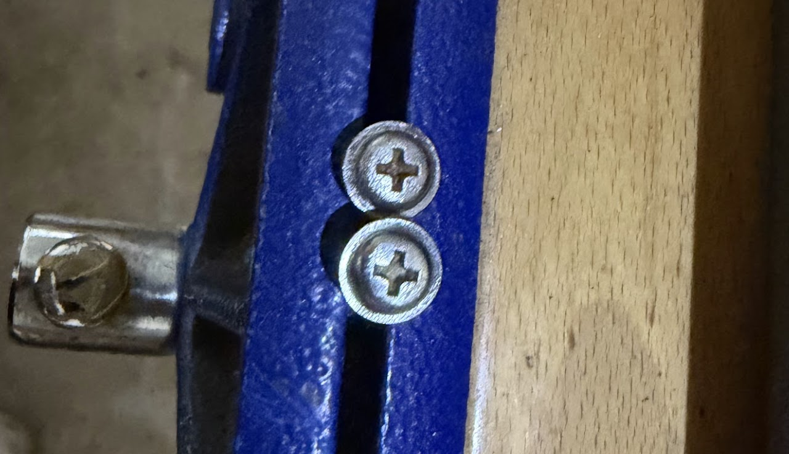

There is a common issue on the facelift 2nd generation (also called the NB2) Mazda MX-5 (2001-2005) called the "Lazy Cupholder". The cupholders on the center console have spring loaded lids (B and C on the image below) to allow them to function as an armrest when not in use. The problem is that there is a small clip that holds the spring on that frequently breaks, allowing the spring to pop off and lets the cupholders fly open at a light touch. This gets in the way of shifting and is overall an annoyance.

To access the cupholder assembly I had to remove the center console via 5 bolts. There are 2 in the inside of the storage compartment (A). There is also 1 bolt on each side of the front of the console (E). These two have clip-on covers that can be removed with a flathead screwdriver. The last bolt is under the power-window switch box, which slots into cavity D and can be pulled out with careful prying using a flathead screwdriver (and then unplugging the 6-pin connector to fully remove it).

After unscrewing the shift-knob, the center console can be lifted forward and upward with care not to damage the trunk and gas cap levers that stick through a hole in the back of the center console into the storage compartment (A).


The cupholders can be removed after unscrewing the 6 screws that hold them on.

I was lucky enough to find one of the broken clips and took its measurements and recreated it in Solidworks so that I could 3d print another one for the other cupholder
This is a 1x1 cm grid to show how small the clip is.

Next, with the cupholders removed I epoxied the clips back onto the cupholders and let it dry for 48 hours before I reattached the springs. The pink part is the 3d-print.

The spring hooks onto the peg next to epoxied piece in this image.


I also removed the rust on the heads of the two bolts that go in the storage compartment since they are visible when inside the car simply using a drill and wire wheel attachment.
As you can see from the video below, the cupholder takes enough force to open so that it will not open unintentionally, just as intended when the car was brand new. Putting everything back together in the car is exactly the reverse of taking it apart.